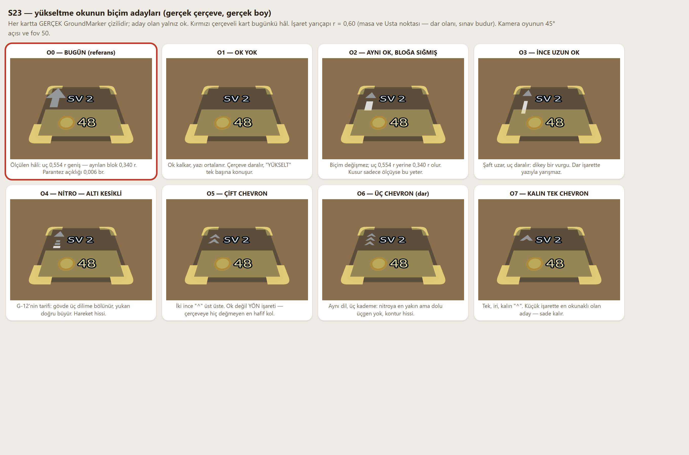

S19'un kalan dört kaleminin görsel üçü. Dördüncüsü (yükseltme tetiği pad'in tam üstünde) rules.ts'e dokunuyor, varyant kapısına tabi ve ayrı tura bırakıldı. Bütün sayılar tam koşu damgalı: docs/olcum-arayuz-s23.txt · rapor docs/arayuz-raporu-s23.md. Kod yazılmadı — karar bölümü boş commit'lendi.
Senin cümlen: "ya kalkacak ya düzeltilecek; şu an çerçeveye değiyor/içinde kalıyor." Ölçüm cümleyi doğruladı ve sebebini buldu: okun ucu, kendisine ayrılan bloktan %63 geniş. Uç bir üçgen (circleGeometry(r·0,32, 3)) ve 3 kenarlı çemberin kenarı yarıçapın √3 katı — yani 0,554 r. Ayrılan blok 0,340 r. Blok, ok yazıyla yarışmasın diye konmuştu; ok o bloğa hiç sorulmadan çiziliyor.
| işaret | r | okun gerçek eni | ayrılan blok | sol kenar payı | yazıya açıklık | parantez açıklığı |
|---|---|---|---|---|---|---|
| YÜKSELT (servis) | 0,85 | 0,554 r | 0,340 r | 0,073 r | 0,053 r | 0,010 r = 0,0085 br |
| SV 2 (masa ×3) | 0,60 | 0,554 r | 0,340 r | 0,073 r | 0,053 r | 0,010 r = 0,0060 br |
| YÜKSELT (Usta) | 0,60 | 0,554 r | 0,340 r | 0,073 r | 0,053 r | 0,010 r = 0,0060 br |
| yazılı hedef: blok 0,340 r · yazı boşluğu 0,160 r · kenar payı 0,180 r | ||||||

| kol | ne | takas |
|---|---|---|
| O0 | bugün | yukarıdaki üç sayı; kusur duruyor |
| O1 | ok YOK | en sade, çerçeve daralır. Ama "yukarı" sinyali gider — feedback_upgrade_legibility çoklu sinyal ister, geriye yalnız yazı kalır |
| O2 | aynı ok, bloğa sığmış | en küçük iş; biçim aynı kalır. Kusur sadece ölçüyse yeter — ama G-12'nin "nitro" isteği karşılanmaz |
| O3 | ince uzun ok | dikey vurgu, yazıyla yarışmaz. Küçük işarette şaft inceldiği için zayıflayabilir |
| O4 | NİTRO, altı kesikli | G-12'nin birebir tarifi; hareket hissi. Üç dilim küçük işarette merdiven gibi okunabilir |
| O5 | çift chevron | en hafif kol, çerçeveye hiç değmez. Ok değil yön işareti — "yükselt" vurgusu azalır |
| O6 | üç chevron (dar) | nitroya en yakın, dolu üçgen yok. O4'ün hareketi + O5'in hafifliği |
| O7 | kalın tek chevron öneri | r = 0,60'ta en okunaklı: tek, iri, kalın. Sade kalır, çerçeveye değmez, "yukarı" sinyali güçlü durur |
Panelin çaycısı, oyunun çaycısı değil. Panel OwnerBodyyi (eski ilkel gövde) çiziyor, salon KayActorü. Dört kimlik işaretinin dördü de ters:
| kimlik işareti | panelde | oyunda | tutuyor mu |
|---|---|---|---|
| kasket | var | yok — S15'te kaldırıldı | HAYIR |
| önlük | var | yok — önlük personelin, patronun değil (S18) | HAYIR |
| omuz havlusu | yok | var (D-116 · P7) | HAYIR |
| sıvalı kol | yok | var (D-116 · P7) | HAYIR |
Garson ve bulaşıkçı sekmeleri daha geride: ikisi de hâlâ kapsül. Panel, oyunda iki turdur var olmayan bir adamı ve hiç var olmamış iki kapsülü gösteriyor.
| sekme | silüet | dikey doluluk | yatay doluluk | ayak kırpık mı |
|---|---|---|---|---|
| Oyuncu | 167×221 px | 0,825 | 0,235 | EVET |
| Garson | 153×199 px | 0,743 | 0,215 | EVET |
| Bulaşıkçı | 162×200 px | 0,746 | 0,228 | EVET |
Kutu 356×134 CSS — geniş ve basık. Gövde eninin yalnız %22-24'ünü kullanıyor, yani kutunun yaklaşık dörtte üçü boş; üçünde de ayak alt kenara dayanıyor. Bedel: owner (Ranger) 8.900 üçgen · waiter (Knight) 5.800 · kitchenHand (Barbarian) 7.123. Panel aynı anda tek gövde çiziyor, ek yük en çok bir rolün üçgeni kadar.
Kabuk zaten tam ekran (D-106, S12'de geçildi). Ölçülen şey içeriğin o ekranı doldurup doldurmadığı — ve beş ekranın üçünde içerik ekranın yarısında bitiyor:
| ekran (telefon 390×844) | içerik yüksekliği | dikey doluluk | en büyük iç boşluk | altta ölü alan |
|---|---|---|---|---|
| Görevler | 708 | 0,905 | 36 | 58 |
| Hedefler | 757 | 0,968 | 40 | 8 |
| Mağaza | 428 | 0,548 | 224 | 342 |
| Karakter | 425 | 0,543 | 37 | 353 |
| Ayarlar | 243 | 0,311 | 48 | 525 |
Ayarlar ekranında içerik 782 px'lik gövdenin yalnız %31'ini dolduruyor. Mağazanın ayrıca 224 px'lik bir iç deliği ve asimetrik kenarı var (sol 75 px, sağ 14 px). Masaüstünde (1280×800) kart 520 px ve ortada: ekranın %40,6'sı panel, %59'u perde.
| kalem | öneri | gerekçe |
|---|---|---|
| O ok | O7 — kalın tek chevron | r = 0,60'ta en okunaklı; çerçeveye değmez, "yukarı" sinyali güçlü kalır. Kusur ölçü DEĞİL biçimdi |
| K karakter menüsü | K3 — gövde + salon dilimi | kimliği düzeltir, kutuyu doldurur ve mağazanın zaten kullandığı dile katılır — yeni dil açılmaz |
| E panel doluluğu | E3 — boşluk işe yarasın (+ M2) | doluluğu içerikle çözer, satır boyunu bozmaz; K3 zaten Karakter ekranının kuyruğunu yiyor |